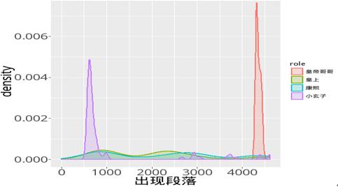

《鹿鼎记》简介
《鹿鼎记》是金庸先生最后一部小说，也是其登峰造极之作 。小说讲 的是一个从小在扬州妓院长大的孩子韦小宝，以不会任何武功之姿态闯荡江湖各大帮、周旋皇帝 朝臣之间、并奉旨远征云南、俄罗斯的故事 。金庸先生将韦小宝的个人经历与历史密切结合，大玩哈镜的手法几乎信以为真，而小宝的做人 方法及毫不留情处事式揭示社会各阶层黑暗面，使得这部书成了不是武侠小说的武侠小说。
点击下面按钮可切换分析与代码
代码、思路参考修改自统计之都《r语千寻第三期：张无忌究竟爱谁？》原文分析的是《倚天屠龙记》， 我们仿照此做法分析的是《鹿鼎记》
人物分析
为了更好分析各女主角重要程度，我们统计各个主角出现的次数，从图1可以发现，出次数最多的当然是小说主人公韦小宝了， 其次是康熙皇帝，然后是建宁公主，双儿，沐剑屏、吴三桂、阿珂次之，方怡最少。这也直观的反映出了各主人公所处的地位以及重要性。
图1 各主角出现的次数
主角的出场顺序
我们再来看看出场顺序的密度统计图。如果我们把每个人物出场的自然段按照顺序排列，那就不难给出每个人物的出场密度估计。 首先我们可以看出男主角的出现密度还是比较均匀的，可以看出作者对韦小宝的描述是均匀分布的；再看看几个女主角的出场顺序，可以看出双儿、 建宁公主是最早出场的。曾柔、方怡是出场比较晚的两个，韦小宝在围剿王屋山时曾柔倾心于他，而最初对韦小宝嗤之以鼻的方怡最终也被他揽入怀中。
图2 各主角的出场顺序与密度
韦小宝与各女主角的亲密程度
韦小宝的七个老婆都跟他有过不同程度的感情纠葛，而这个程度我们应该如何去界定大小呢？在这里我们根据她们与韦小宝同时出场的次数来刻画亲密 程度。书中每一个自然段的意义相近、中心一致。所以，用与韦小宝出现在同一自然段的次数来定义她们与韦小宝的亲密值，这个计算是比较简单的。 如图3，我们可以看出双儿与苏荃是与韦小宝亲密值最高的两个。小宝的七个老婆，除双儿外，其他人都是靠死缠烂打忽悠到手的，都在不同程度上给小宝 出过难题，让小宝大伤脑筋。双儿却不这样，一开始就全身心地投入。而苏荃为什么这个高，大概就是因为她年龄最大，颇有计谋与魄力，在她的老婆里 面是作为领袖一般的存在，最重要的是，她最先有了韦小宝的孩子。
图3 各女主角与韦小宝的亲密值
韦小宝与康熙称谓的变化
- 从称谓信息上来看，因为韦小宝的起起落落总是与康熙密不可分。从图4我们可以看出，康熙皇帝最开始称谓最多的是小玄子，那时候他跟韦小宝是纯洁 的友谊关系，而在韦小宝知道他是皇帝，并且开始为他做事之后，小玄子的称谓就没有了，因为这个时候他们更多的是皇帝与下属的关系，有了敬畏之心， 而称谓也就基本是皇上了。而到了后期，韦小宝的实力得到成长，皇帝想杀他却也杀不了的时候，这个时候皇帝的称谓书中出现更多的是康熙，而小玄子也 开始再次出现，因为韦小宝的实力得到了成长，成长到了皇帝控制不了他的程度，他也对皇帝没有了敬畏之心，所以小玄子又出现了。后期词频最高的皇帝 哥哥都是建宁公主喊的。 
- 韦小宝刚开始的称谓是小桂子，当时他还是作为一个皇上身边的心腹“小太监”，后来入了天地会才逐渐有了韦兄弟、韦香主等称呼，然后认识了双儿、阿 珂等才有了韦大哥、相公等称呼，后来给皇帝立功升官有了韦爵爷的称呼，最后加神龙教，就有了“白龙使”的称呼。从这些称谓可以看出韦小宝从一个小人物 逐渐蜕变成了不管在朝廷还是天地会还是神龙教都举足轻重的人物。
图4 康熙皇帝的称谓变化
图5 韦小宝的称谓变化
词云图绘制
在这里我们进行一下分词处理，利用的是wordcloud2包进行绘制词云图。
图6 词云图
语义分析
将文本进行分词后，我们可以看看跟几个主角关系最近的都有什么词语。例如，跟“韦香主”相近的词有“青木堂众”、“天地会”等，因为韦小宝入天地会之后 这都是跟他“韦香主”这个称谓有关的词语；跟“双儿”相近的词语就有“相公”、“亲个嘴儿”、“红着脸”等，因为双儿是韦小宝的随从跟爱人。与“康熙”有关的词汇 就有“皇上”、“奴才”、“大臣”、“下旨”等有关的词汇。说明语义分析还是比较准确的。
层次文本聚类
进一步我们可以利用词向量结果来进行聚类此处选择层次聚类。根据图7我们可以分为四类，建宁公主与康熙是兄妹俩，然后同是皇室的人，可以归为一
类；方怡、沐剑屏是师姐妹，可以归为一类；然后将除了建宁公主之外的女主角们分为一类，因为她们都是韦小宝的老婆；最后韦小宝跟他这些除了建宁公主之
外的老婆们又可以分为一类，因为他们都是反朝廷的人。
图7 主角分词聚类
结论
通过以上分析我们可以精确地看出，跟韦小宝关系最密切的主角当属双儿了，无论从出场的顺序、出现的次数还是语义分析跟韦小宝的相关性，双儿都是韦小 宝最密切的人。
代码转载修改自统计之都《r语千寻第三期：张无忌究竟爱谁？》原文分析的是《倚天屠龙记》， 我们仿照此做法分析的是《鹿鼎记》
数据集：dataset下载
#代码
setwd("c:/data/")
library(showtext)
library(ggplot2)
### read data
luding = readLines("鹿鼎记.txt")
luding[1:10]
#### cut paragraph
para_head = grep("^\\s+", luding)
cut_para1 = cbind(para_head[1:(length(para_head)-1)], para_head[-1]-1)
luding_para = sapply(1:nrow(cut_para1), function(i) paste(luding[cut_para1[i,1]:cut_para1[i,2]], collapse = ""))
luding_para[1:4]
#### read in main roles
roles = readLines("主角名单.txt")
roles[1:8]
#### count roles
roles1 = paste0("(", gsub(" ", ")|(", roles), ")")
main_roles = c("双儿","建宁公主","方怡","沐剑屏","阿珂","曾柔","苏荃","韦小宝","康熙","吴三桂")
role_para = sapply(roles1[1:10], grepl, luding_para)
colnames(role_para) = main_roles
role_count = data.frame(role = factor(colnames(role_para),
levels = c("双儿","建宁公主","方怡","沐剑屏","阿珂","曾柔","苏荃","韦小宝","康熙","吴三桂")),
count = colSums(role_para))
showtext.auto(enable = T)
X11()
ggplot(role_count, aes(x = role, y = count, fill = role)) +
geom_bar(stat = "identity", width = 0.75) +
xlab("主角") +
ylab("次数") +
theme(axis.text=element_text(size=14, family = "wqy-microhei"),
axis.title=element_text(size=14,face="bold"),
axis.title.x = element_text(vjust=-2),
legend.position="none")
#### show-up density
role_para_df = data.frame(role = factor(rep(main_roles, colSums(role_para))),
para = which(role_para, arr.ind = T)[,1])
role_para_df1 = role_para_df[is.element(role_para_df$role, c("双儿","建宁公主","方怡","沐剑屏","阿珂","曾柔","苏荃","韦小宝")),]
ggplot(role_para_df1, aes(para, fill = role, colour = role)) +
geom_density(aes(y = ..density..), alpha=0.2, size = 1) +
xlab("出场顺序") +
theme(plot.margin = unit(c(0,1,1,0), "cm"),
axis.text=element_text(size=14, family = "wqy-microhei"),
axis.title.x = element_text(vjust=-2),
axis.title=element_text(size=14,face="bold"))
#### count common show-up
colSums(role_para[,9]*role_para[,1:7])
role_count1 = data.frame(role = factor(colnames(role_para)[1:7]),
count = colSums(role_para[,9]*role_para[,1:7]))
ggplot(role_count1, aes(x = role, y = count, fill = role)) +
geom_bar(stat = "identity", width = 0.75) +
xlab("主角") +
ylab("亲密值") +
theme(axis.text=element_text(size=14, family = "wqy-microhei"),
axis.title=element_text(size=14,face="bold"),
axis.title.x = element_text(vjust=-2),
legend.position="none")
#### density of different names of one role
rolesl = strsplit(roles, " ")
#### (1) 韦小宝,康熙皇帝将9改为8
roles_para = sapply(rolesl[[9]], grepl, yitian_para)
colnames(roles_para) = rolesl[[9]]
roles_para_df = data.frame(role = factor(rep(colnames(roles_para), colSums(roles_para))),
para = which(roles_para>0, arr.ind = T)[,1])
ggplot(roles_para_df, aes(para, fill = role, colour = role)) +
geom_density(aes(y = ..density..), alpha=0.2, size = 1) +
xlab("出现段落") + xlim(0, 4614)+
theme(plot.margin = unit(c(0,1,1,0), "cm"),
axis.text=element_text(size=17, family = "wqy-microhei"),
axis.title.x = element_text(vjust=-2),
axis.title=element_text(size=20,face="bold"))
#### split words
#install.packages("jiebaR")
library(jiebaR)
cutter = worker(bylines = TRUE, stop_word = "中文停词库.txt")
new_user_word(cutter, unlist(rolesl), rep("n", length(unlist(rolesl)))) ### insert new words
luding_words = cutter[luding_para]
luding_words <-lapply(luding_words,function(x){
index <- nchar(x)>1
x[index]
})
luding_split = sapply(luding_words, paste, collapse = " ")
writeLines(luding_split, "luding.txt")
#将分词结果转化为向量
myfile.words<- unlist(luding_words)
#统计词频
myfile.freq <- table(myfile.words)
myfile.freq <- rev(sort(myfile.freq))
myfile.freq <- data.frame(word=names(myfile.freq),freq=myfile.freq);
names(myfile.freq)<-c("word","words","freq")
word<-myfile.freq$word
freq<-myfile.freq$freq
myfile.freq <- data.frame(word,freq)
fix(myfile.freq)
#导出分词结果
write.table(myfile.freq,file="c:/data/分词结果.csv",quote=FALSE,sep=",")
#绘制词云图
#library(devtools)
#devtools::install_github("lchiffon/wordcloud2")
library(wordcloud2)
#去掉韦小宝词
myfile.freq<-myfile.freq[-1,]
wordcloud2(myfile.freq,size = 2,fontFamily = "微软雅黑",color = "random-light", backgroundColor = "black")#install_github("bmschmidt/wordVectors")
library(wordVectors)
model = train_word2vec("luding.txt", output="luding.bin",
threads = 3, vectors = 100, window=12, force = T)
vec = read.vectors("luding.bin")
nearest_to(model,model[["韦小宝"]])
nearest_to(model,model[["韦香主"]])
nearest_to(model,model[["相公"]])
nearest_to(model,model[["双儿"]])
nearest_to(model,model[["建宁公主"]])
nearest_to(model,model[["阿珂"]])
nearest_to(model,model[["康熙"]])
nearest_to(model,model[["小桂子"]])
nearest_to(model,model[["曾柔"]])
nearest_to(model,model[["鹿鼎公"]])
nearest_to(model,model[["苏荃"]])
nearest_to(model,model[["沐剑屏"]])
nearest_to(model,model[["方怡"]])
#聚类分析
rr = sapply(rolesl, function(x) x[1])
cos_dist = cosineDist(vec[rr],vec[rr])
hc = hclust(as.dist(cos_dist), method = "average")
plot(hc)
MENBIN 地点：中国--大连--东财